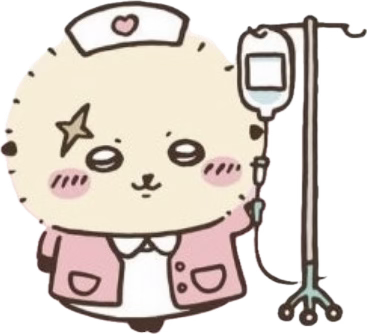
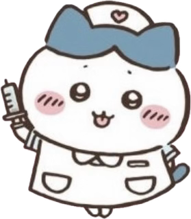

WELCOME TO MY PROFILE ♡
사람을 먼저 생각하는 예비 간호사

단국대학교 간호학과 2학년
안녕하세요. 저는 단국대학교 간호학과 2학년에 재학 중인 민채원입니다. 사람들을 돕는 일에서 보람을 느끼며, 새로운 아이디어를 떠올리고 이를 실제로 실현하는 과정에 흥미를 가지고 있습니다.
특히 의료 취약계층의 의료 접근성과 디지털 헬스케어 분야에 관심이 많습니다. 간호학을 공부하면서 환자의 질병뿐 아니라 환자가 살아가는 환경과 일상까지 이해하는 간호사가 되고 싶다는 목표를 가지게 되었습니다.
의료 취약계층이 겪는 의료 서비스 이용의 어려움을 줄이고 누구나 평등하게 의료 서비스를 이용할 수 있는 환경에 관심이 있습니다.
AI와 디지털 기술을 활용하여 의료 서비스를 더욱 편리하고 효율적으로 개선할 수 있는 방법을 고민합니다.
일상 속 불편함을 발견하고 새로운 아이디어를 통해 해결하는 과정에 흥미를 가지고 있습니다.
질병뿐 아니라 환자의 감정과 생활환경, 개인의 특성을 함께 고려하는 따뜻한 간호에 관심이 있습니다.
맡은 역할에 최선을 다하고 끝까지 책임을 다하는 자세를 중요하게 생각합니다.
팀원들과 적극적으로 소통하고 서로 협력할 수 있도록 이끄는 능력을 가지고 있습니다.
새로운 아이디어를 생각하는 것에서 그치지 않고 직접 도전하고 실천하는 것을 좋아합니다.
의료봉사단에서 교육팀장으로 활동하며 팀원들과 함께 교육 활동을 기획하고 원활한 활동을 위해 소통하고 있습니다.
장애인의 병원 이용 과정에서 발생하는 불편함을 줄이기 위한 AI 서비스 아이디어로 공모전에 도전하고 있습니다.
다양한 옷을 조합하고 나만의 스타일을 만들어 가는 것을 좋아합니다.
다양한 나라의 음악을 듣고 애니메이션과 영화를 감상하는 것을 즐깁니다.
음악과 영상 콘텐츠를 통해 여러 나라의 언어와 문화를 알아가는 것을 좋아합니다.

제가 되고 싶은 간호사는 질병만을 바라보는
사람이 아니라, 질병을 가진 한 사람의 삶을
이해하고 공감하는 간호사입니다.
환자가 병원에 머무는 시간뿐 아니라
퇴원한 뒤 다시 일상으로 돌아가는 과정까지
함께 고민하고 싶습니다.
의료 취약계층을 향한 따뜻한 시선과
디지털 헬스케어에 대한 관심을 바탕으로
기술과 사람을 연결하는 간호사로 성장하겠습니다.